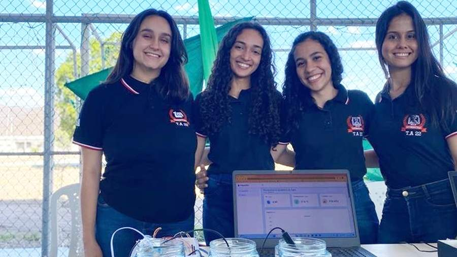

Comércio
Doceria
Uma vitrine digital para quem quer descobrir doces e delícias.
Visitar sitePROGRAMAÇÃO DE SISTEMAS WEB
Reunimos aqui os sites e sistemas criados nas aulas de Programação de Sistemas Web. Escolha um projeto para abrir a página original e conhecer o trabalho da turma.

FEITO EM SALA, PUBLICADO NA WEB
Sites e sistemas desenvolvidos em diferentes propostas ao longo das aulas.
Uma vitrine digital para quem quer descobrir doces e delícias.
Visitar siteUm projeto dedicado ao universo dos filmes e do entretenimento.
Visitar siteUm espaço online para explorar livros e manter a leitura por perto.
Visitar siteUma proposta que aproxima conhecimento, leitura e acessibilidade.
Visitar siteUma iniciativa digital voltada à solidariedade e à cultura de doação.
Visitar siteUm catálogo online de materiais para estudar, criar e organizar.
Visitar siteUm projeto ligado à música, com área de acesso própria.
Visitar siteUma experiência digital dedicada ao universo esportivo.
Visitar siteUm site para apresentar uma experiência de restaurante na web.
Visitar siteTente outro termo ou escolha uma categoria diferente.
Os projetos abrem em uma nova aba. A disponibilidade de cada site depende da hospedagem original.
SOBRE A COLEÇÃO
Este portal reúne projetos produzidos por estudantes nas aulas de Programação de Sistemas Web. A proposta é deixar os trabalhos em um só lugar, facilitar o acesso e dar visibilidade às ideias que ganham forma durante o aprendizado.
Um arquivo vivo de experiências da turma.